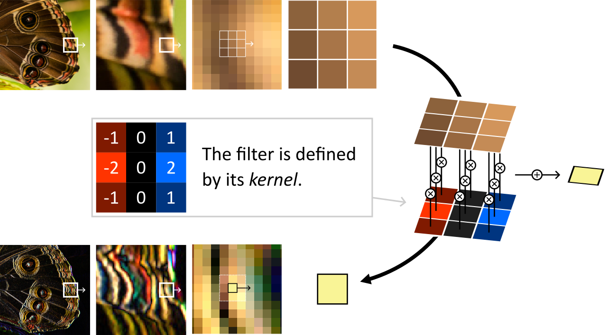
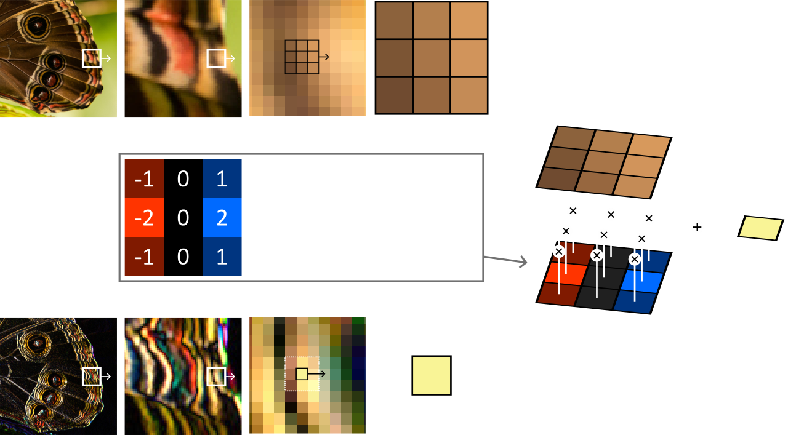

Convolution Filters#
Resulting code: step215
Many image processing algorithms are based on convolution filter operations somewhere in their pipeline.
The concept is simple: the new value of each pixel is computed by looking at a sliding window centered around the pixel, multiplying it by a fixed kernel and summing up.
 An vertical Sobel filter is performed by sliding 1 pixel at a time a window of 3 by 3 pixels and multiplying its content with a given kernel.
The kernel defines the way each neighbor of the pixel of interest influences its output value. In particular, a kernel that is \(1\) in its center and \(0\) everywhere else defines a filter that does nothing.
By changing the kernel, we can create a wide variety of filters. Some of them are well known, like the Sobel filter in the figure above or the Gaussian blur filter. Some others are algorithmically discovered, like the layers of Convolutional Neural Networks.
Sobel filter#
We can start with the Sobel filter from the figure above. A Sobel filter is meant to detect edges, either vertical ones or horizontal ones depending on how we orient the kernel. For vertical edges, the kernel is:
Let us write the shader first, and then connect the dots:
@group(0) @binding(0) var inputTexture: texture_2d<f32>;
@group(0) @binding(1) var outputTexture: texture_storage_2d<rgba8unorm,write>;
@compute @workgroup_size(8, 8)
fn computeSobelX(@builtin(global_invocation_id) id: vec3<u32>) {
let color = abs(
1 * textureLoad(inputTexture, vec2<u32>(id.x - 1, id.y - 1), 0).rgb
+ 2 * textureLoad(inputTexture, vec2<u32>(id.x - 1, id.y + 0), 0).rgb
+ 1 * textureLoad(inputTexture, vec2<u32>(id.x - 1, id.y + 1), 0).rgb
- 1 * textureLoad(inputTexture, vec2<u32>(id.x + 1, id.y - 1), 0).rgb
- 2 * textureLoad(inputTexture, vec2<u32>(id.x + 1, id.y + 0), 0).rgb
- 1 * textureLoad(inputTexture, vec2<u32>(id.x + 1, id.y + 1), 0).rgb
);
textureStore(outputTexture, id.xy, vec4<f32>(color, 1.0));
}
Simple, right? All we need is the input and output textures. I leave it as an exercise, as it is very similar to the setup of the first part of the Mipmap Generation chapter, except that the output is a view of a different texture instead of being a different MIP level of the same one.
Note
Don’t forget to change the entry point of the compute pipeline:
computePipelineDesc.compute.entryPoint = "computeSobelX";
On this input image, you should get the following result:
{kind=link}
The result of our vertical Sobel filter#
Note
It is interesting to apply this filter to the different MIP levels independently, to detect edges at different scales.
GUI#
Optional section
If you are only interested in the convolution filters themselves and that making a non-interactive command line tool is fine, you may skip this section.
Setup#
In order to quickly experiment with our filters, we reuse the GUI elements from the Simple GUI chapter.
In a nutshell, we must:
Add the
glfw,glfw3webgpuandimguilibrary as dependencies (don’t forget to add a CMakeLists in theimguidirectory).Add an
initWindow,initSwapChainandinitGuiinit steps (and matching teminate steps).Add a main application loop.
I also add a m_shouldCompute boolean to instruct the main loop to call onCompute only when needed (i.e., when an input parameter changes):
// Main frame
while (app.isRunning()) {
app.onFrame();
if (app.shouldCompute()) {
app.onCompute();
}
}
Displaying textures#
To avoid building our own render pipeline, we can use ImGui to draw texture views, by manually adding instructions to the ImDrawList:
void Application::onGui(RenderPassEncoder renderPass) {
// [...]
ImDrawList* drawList = ImGui::GetBackgroundDrawList();
// Draw a red rectangle
drawList->AddRectFilled({ 0, 0 }, { 20, 20 }, ImColor(255, 0, 0));
// Draw a texture view
drawList->AddImage((ImTextureID)m_textureMipViews[0], { 20, 0 }, { 220, 200 });
// [...]
}
The red rectangle and the image are drawn by ImGui, no need for us to care about a render pipeline!#
In the end our render pass in onFrame is simple:
RenderPassEncoder renderPass = encoder.beginRenderPass(renderPassDesc);
onGui(renderPass);
renderPass.end();
Note
What ImGui calls ImTextureID depends on the drawing backend. In the case of our WebGPU-based backend, it must correspond to a valid TextureView object. Using a Texture instead leads to crashes.
Uniforms#
We can add uniforms in order to drive the behavior of the filter from the UI.
Note that all ImGui functions return a boolean telling whether the value they represent has been modified, we can use it to update our m_shouldCompute and run the compute shader only when needed:
bool changed = false;
ImGui::Begin("Uniforms");
changed = ImGui::SliderFloat("Test", &m_uniforms.test, 0.0f, 1.0f) || changed;
ImGui::End();
m_shouldCompute = changed;
You can then add a uniform for the kernel. Be careful with alignment rules when using a mat3x3, because padding is needed between columns of the matrix:
// WGSL struct
struct Uniforms {
kernel: mat3x3<f32>,
test: f32,
}
// C++ struct with matching alignment
struct Uniforms {
// The mat3x3 becomes a mat3x4 because vec3 columns are aligned as vec4
mat3x4 kernel = mat3x4(0.0);
float test = 0.5f;
// Add padding at the end to round up to a multiple of 16 bytes
float _pad[3];
};
Note
To assist you with this tedious alignment, I have started writing a little online tool!
You can now dynamically play with the filter! Try for instance the Sobel filter on a different axis:
The kernel is exposed as a uniform in the UI. Here we show an horizontal Sobel filter (left: input, right: output).#
Blur filters#
Box blur#
If we set all the weights of the kernel to \(1/9\), we get a blur effect.
A box blur is obtained by convolving with a uniform kernel.#
Note
When the kernel is all non-negative, it is common to need to normalize its weights, i.e., to divide them by the total sum of weights. You may want to add a checkbox in the UI to do so.
Separability#
If we want a stronger blur, we can simply use a larger kernel. However, this quickly reaches an unreasonable number of old texel fetch per new texel.
Fortunately, the box filter is separable: it can be applied on one axis first, and on the second axis then, using non-square kernel of size \(r \times 1\) and \(1 \times r\). This requires \(2r\) operations instead of \(r^2\), huge savings! For instance for \(r = 5\):
The box blur is fine, but if you apply it with large kernels you will quickly see why it is called “box” blur. It transforms spikes in the signal into very noticeable squares.
Gaussian blur#
The Gaussian blur is the most natural type of blur (a.k.a. low-pass filter), it is found in a lot of different contexts and you have likely seen at least once its 1D kernel:
Single-dimensional Gaussian kernels (a.k.a. normal distributions) of standard deviation \(\sigma = 1.0\) (red), \(\sigma = 0.5\) (green) and \(\sigma = 0.25\) (blue).#
In theory a Gaussian blur requires an infinite kernel. But the influence of neighbors decreases exponentially, so we can quickly round weight to 0 and thus bound the size of the kernel. Here is a simple approximation of a 2D Gaussian kernel:
And good news: the Gaussian blur is also separable! It is actually the only blur that is both separable and circularly symmetric (proof).
To calculate the coefficients of a Gaussian blur (separated) kernel, you can use this blur coefficients generator: the WEIGHTS array it creates can directly be used in writeBuffer to communicate it to the compute shader.
Important
In order to save some texture reads, this generator assumes that you are using a linear sampler to get values from the input texture. In other terms, use textureSample rather than textureLoad.
Morphological filters#
Morphological filters are also based on a sliding window, except that after multiplying by the kernel, instead of summing the different neighbors, we collect the maximum or minimum (or yet another non-linear operations).
A maximum tends to dilate the bright areas and inversely a minimum erodes the white pixels.
The kernel is generally defined by a binary mask called the structuring element of the morphological operation. When the structuring element is a rectangle, the filter is separable.
Morphological filters applied to an RGB image.#
Note
It is common to use morphological filters on black and white masks, for instance to filter out imperfection on contour detection.
Conclusion#
Convolution filters are a good example of use of compute shaders (even though they can easily be emulated by drawing a full screen triangle and then using a fragment shader). They are also a building block for a lot of image processing tools.
Resulting code: step215